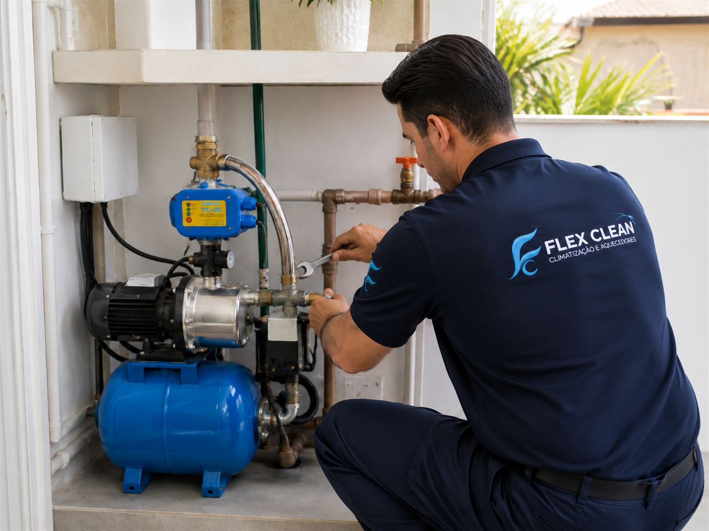
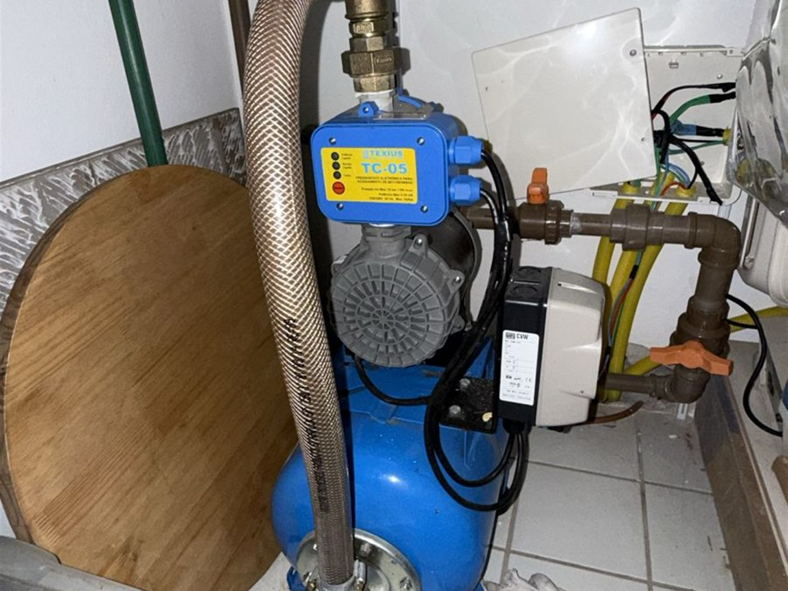
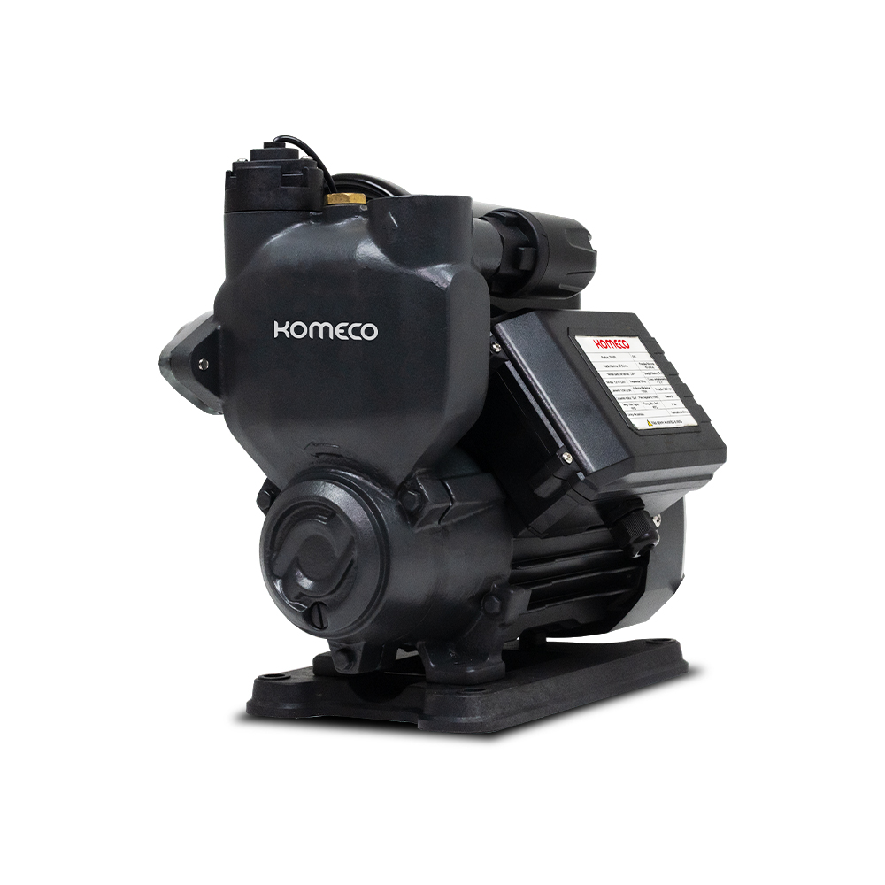
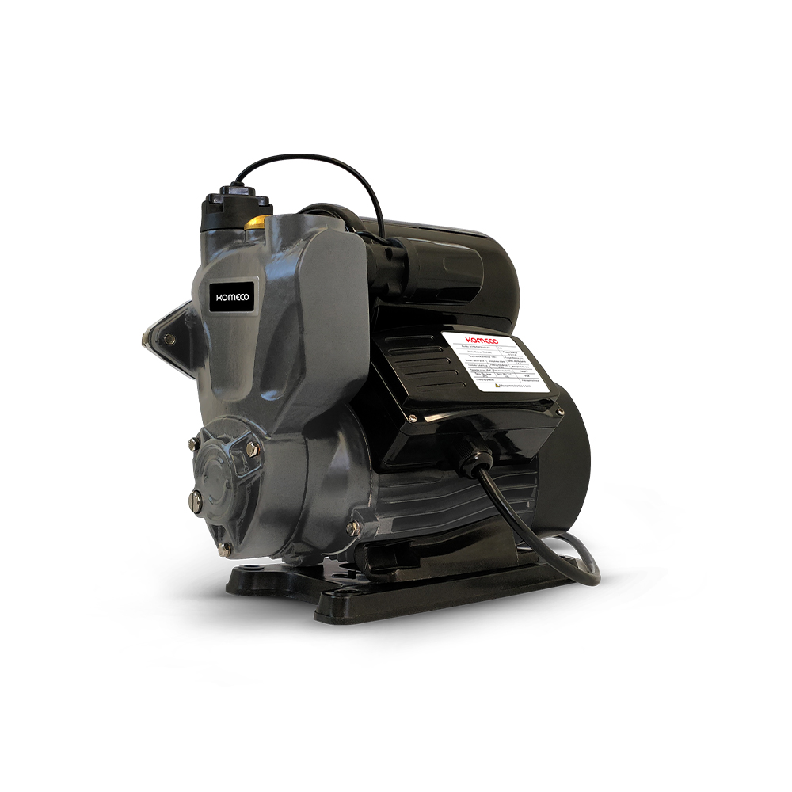
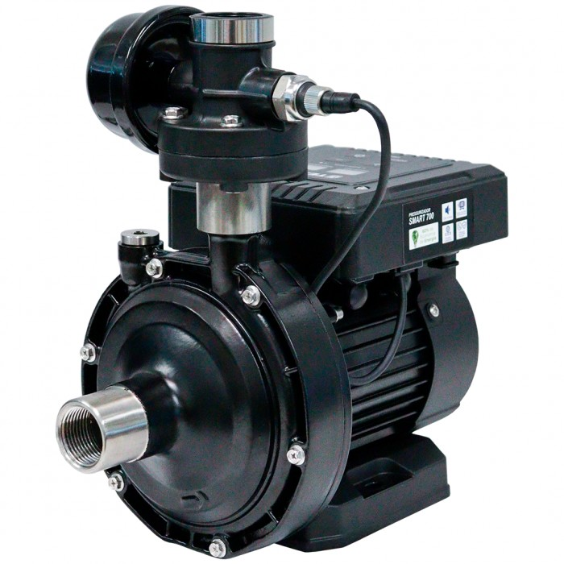
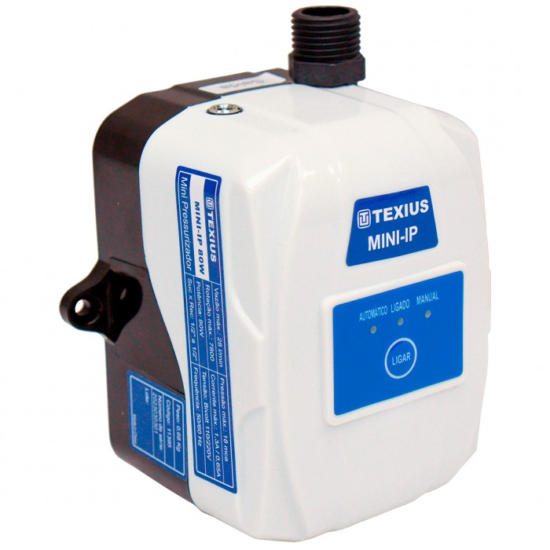

com Instalação Profissional de Pressurizadores em Florianópolis
Venda, instalação e manutenção de bombas e pressurizadores, com suporte técnico, garantia e atendimento especializado há mais de 10 anos.

Se você sofre com:
O problema provavelmente está na pressão hidráulica da residência.
E pior:
muitas pessoas acabam comprando o equipamento errado ou contratando instalações mal feitas que geram:
A Flex Clean resolve isso da forma correta.
Nós projetamos a solução ideal para sua casa.
Cada residência possui uma necessidade diferente.
Por isso, antes da instalação, nossa equipe avalia:
Assim conseguimos indicar o modelo correto para:

O que muda depois da instalação?
Ideais para aquecedores a gás e pequenos consumos.
Indicadas para sistemas onde a bomba aciona através do fluxo de água.
Mantêm a rede hidráulica pressurizada constantemente.
Tecnologia moderna com menor ruído e maior economia.
Pressurização específica para água quente.




Realizamos:
Trabalhamos com:
E diversas outras marcas do mercado.
Todos os equipamentos são instalados conforme as recomendações dos fabricantes.
“Desde o primeiro contato foram transparentes e explicaram exatamente o que seria feito. O serviço ficou excelente.”flexclean.com.br
“Profissionais preparados, organizados e pontuais.”flexclean.com.br
“Atendimento rápido e eficiente.”flexclean.com.br
Hoje boa parte dos novos clientes chegam através de indicação.
Instalações incorretas podem causar:
Por isso realizamos:
fale com um especialista.
Escolher o equipamento errado pode gerar:
Nossa equipe ajuda você a escolher a solução ideal para sua casa.
A Flex Clean oferece:
Tudo com atendimento profissional e acompanhamento do início ao fim.
Fale com nossa equipe no WhatsApp e descubra a solução ideal para sua residência.
Depende da pressão atual, quantidade de pontos hidráulicos e infraestrutura da residência.
Quando feita incorretamente, sim. Por isso realizamos avaliação e regulagem adequada.
Sim, atendemos toda a ilha.
Depende do modelo. Temos opções mais silenciosas e modelos inverter.
Sim. Trabalhamos com instalação, manutenção e revisão preventiva.
Sim. Nossa equipe orienta a escolha correta conforme sua necessidade.